Eight editable clay sculptures in Assets/Prefabs/Final/Food. Open Assets/scenes/fruit_review.scene to compare them at authored scale with the finished mug, teapot, and flour jar.
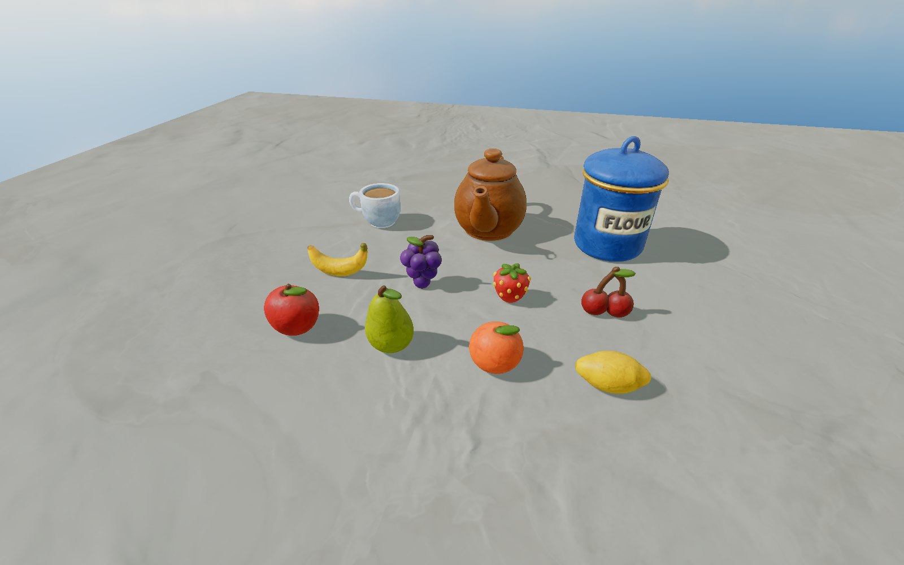
Second scene view. The individual asset thumbnails below are framed independently and do not show relative scale.
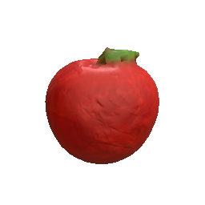
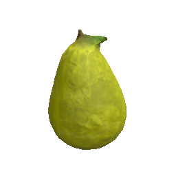
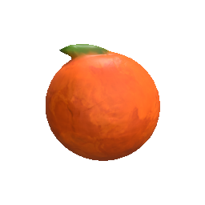
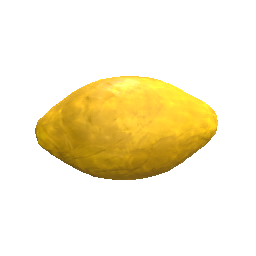
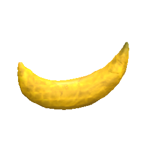
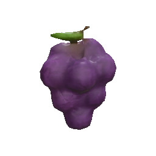
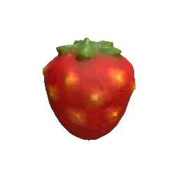
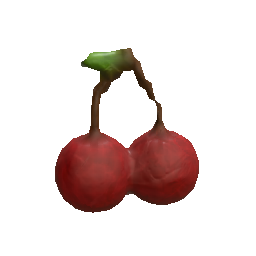
Rounded primary forms, restrained shape counts, soft joins, thick attachments, and the existing plasticine materials. Fruit bodies are roughly 20–30 units across, compared with the reference mug's roughly 32-unit body width. Shared renderer, collision, damage, and clay settings come from the finished mug.
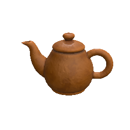
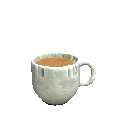
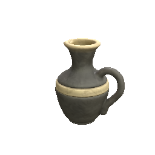
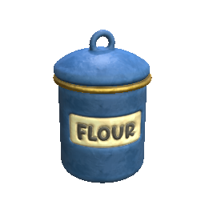
Regenerate with powershell -NoProfile -ExecutionPolicy Bypass -File Tools/PropGen/gen-fruit.ps1. Regeneration replaces these eight fruit prefabs; save manual variants under different names. Preview PNGs are captured separately from the editor. All eight prefabs compiled successfully and were inspected together in the review scene as well as in asset thumbnails. Collision has not been playtested.
{kind=link}